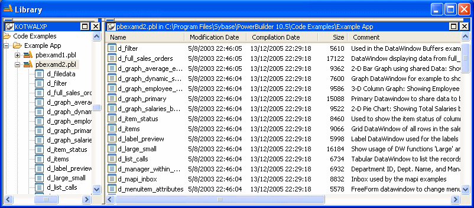
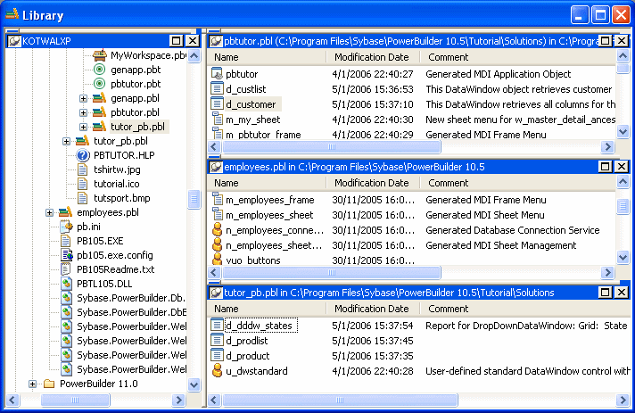

The Library painter has two views, the Tree view and the List view, that can display all the files in your file system, not just PowerBuilder objects. You use the painter primarily for displaying and working with workspaces, targets, library files (PBLs), and the objects they contain.
The Tree and List views are available from the View menu. By default, the Library painter displays one Tree view (on the left) and one List view (on the right). When the Library painter opens, both the Tree view and the List view display all the drives on your computer, including mapped network drives.

The Workspace tab page in the System Tree works like a Tree view in the Library painter. You can perform most tasks in either the System Tree or the Library painter Tree view, using the pop-up menu in the System Tree and the pop-up menu, PainterBar, or menu bar in the Library painter. When you have the System Tree and a Library painter open at the same time, remember that the PainterBar and menu bar apply only to the Library painter.
Each time you click the Library painter button on the PowerBar, PowerBuilder opens a new instance of the Library painter. One advantage of using the System Tree is that there is only one instance of it that you can display or hide by clicking the System Tree button on the PowerBar.
The Tree view in the Library painter displays the drives and folders on the computer and the workspaces, targets, libraries, objects, and files they contain. You can expand drives, folders, and libraries to display their contents.
The List view in the Library painter displays the contents of a selected drive, folder, or library and has columns with headers that provide extra information. For libraries, the comment column displays any comment associated with the library. For objects in libraries, the columns display the object name, modification date, size, and any comment associated with the object. You can resize columns by moving the splitter bar between columns, and you can sort a column's contents by clicking the column header.
 About sorting the Name column When you click the Name column header repeatedly to sort,
the sort happens in four ways: by object type and then name, in
both ascending and descending order, and by object name, in both
ascending and descending order. You might not easily observe the
four ways of sorting if all objects of the same type have names
that begin with the same character or set of characters.
About sorting the Name column When you click the Name column header repeatedly to sort,
the sort happens in four ways: by object type and then name, in
both ascending and descending order, and by object name, in both
ascending and descending order. You might not easily observe the
four ways of sorting if all objects of the same type have names
that begin with the same character or set of characters.
Most of the time, you select a library in the Tree view and display the objects in that library in the List view, but at any time, you can set a new root or move back and forward in the history of your actions in the List view and the Tree view to display libraries or other items. For more information, see "Setting the root" and "Moving back, forward, and up one level".
You might find that having more than one Tree view or List view makes your work easier. Using the View menu, you can display as many Tree views and List views as you need.
The following screen shows the Library painter with one Tree view and three List views.

You can filter the objects in each of the List views so that one List view shows menus, another windows, and another user objects. For information about filtering objects in a view, see "Filtering the display of objects".
To get this layout in the Library painter, use the View menu to display two more List views and then manipulate the views to fit this layout. For information about opening and closing views, manipulating views, returning to the default view layout, or saving your favorite layouts, see "Using views in painters".
Tree and List views are synchronized with each other. When you are using more than one Tree view or List view, changes you make in one type of view are reflected in the last view you touched of the other type. For example, when an item is selected in a Tree view, the contents of that item display in the List view that you last touched. When you display new contents in a List view by double-clicking an item, that item is selected in the Tree view you last touched (if it can be done without resetting the root).
Each List view in the previous screen displays the contents of a different library because three libraries were dragged from the Tree view and dropped in different List views. For information about drag and drop, see "Displaying libraries and objects".